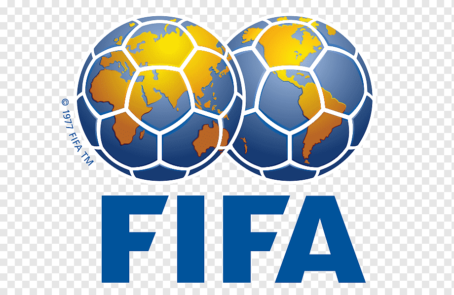

- Outras seleções
- Bandeiras
- Hinos
Listas das seleções que estarão na copa
Na copa do mundo de 2022, que será realizada no Catar teremos 32 seleções, abaixo veremos cada uma delas.
Listas das Seleções
Brasil
Argentina
Paraguai
Camarões
África do Sul
Togo
Costa do Marfim